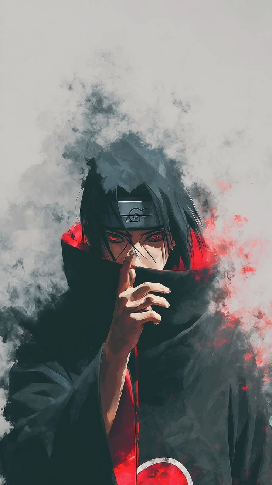

Itachi is one of the most complex antiheroes in the Naruto universe, defined by profound sacrifice, brilliant intellect, and elite shinobi skills. As a prodigy of the Uchiha clan, he bore the ultimate burden of hatred and infamy in order to prevent a civil war and keep his beloved brother safe from the shadows.
Examine Ultimate JutsuAn absolute Genjutsu powered by his left Mangekyō Sharingan. Traps opponents in an illusionary realm where Itachi alters their perception of space and time completely.
Triggered through his right Mangekyō Sharingan. Conjures jet-black flames at the user's exact focal point that will burn continuously until the target is reduced entirely to ash.
The ultimate avatar protection summoned by awakening both eyes. Itachi's glowing red Susanoo brandishes the mythical Totsuka Blade to seal any foe instantly.